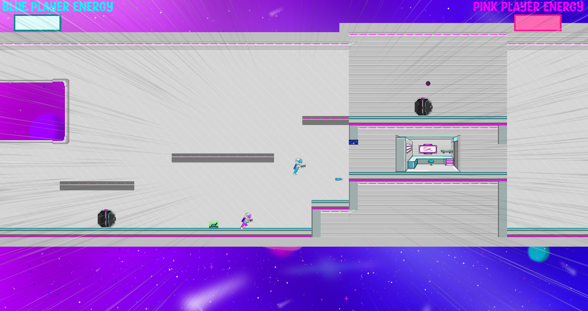

My Work
Polliword

Polliword is a Physics Puzzle based game where you play as a Frog. You can use your tongue to collect words, which can alter the world. Use these words to finish puzzles, and platform your way to the end!
This game was made as a team effort. As the only engineer I did all the coding. All the physics were made from scratch, only the engine basics (object hierarchy and rotation/position alteration) was done using the existing code.
Platform: PC
Code Language: C#
Engine: GXP Engine (.NET)
My Contribution: All coding (Physics & Gameplay)
Space Race
Space Race is a Local Multiplayer Chaotic Platformer where you play and a friend play as one of the astronauts escaping the spaceship. Using a rocket launcher you can open doors, shoot eachother or lay down traps as you reach the end!
This game was made as a team effort. As the only engineer I did all the coding. While making this game I used the GXP Engine built in Collisions to create the gameplay.
Platform: PC
Code Language: C#
Engine: GXP Engine (.NET)
My Contribution: All coding (Gameplay)
Vector arcade
Vector Arcade is a small game made as a proof of concept of a small physics engine built within the .NET environment. The game consists of two minigames: A bullet hell game and a small platformer. This game was made entirely by myself.
Platform: PC
Code Language: C#
Engine: GXP Engine (.NET)
My Contribution: All Aspects
Nightlight

Nightlight is a small Point and Click game where you play as the main character Boyo. Go through different scenes with different characters to help everyone out! This game was made with children in mind.
This game was made as a team effort. This game was built by me and one other Engineer. I did most of the gameplay programming and some of the scenes, and my co-engineer did mostly the scene programming.
Platform: PC
Code Language: Java
Engine: Processing
My Contribution: Coding (Gameplay)